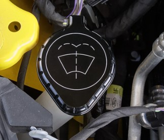
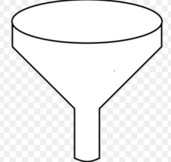
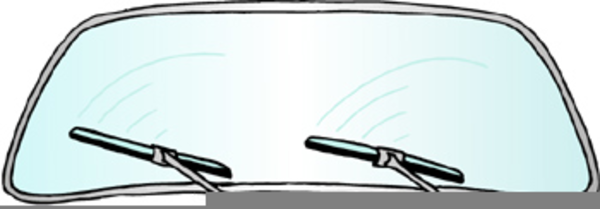

How to Add Windshield Washer Fluid
Tools / Parts Needed
- Windsheild Washer Fluid
1. Find the Fluid Reservior
The Windshield Fluid reservoir is often located under the Hood of your vehicle. The Filler neck is usually located along the sides of your engine bay and is frequently labeled. Please reference your owner's manual if you need help finding your reservoir.
2. Insert a Funnel
For a mess-free repair, the use of a funnel is recommended to prevent any spilling.
3. Pouring
Begin Pouring your washer fluid being careful not to overfil the reservior.
4. Test your wipers
Close the cap to your reservior then you can close the hood. Start your vehicle and active the windshield wiper cleaning mode.
